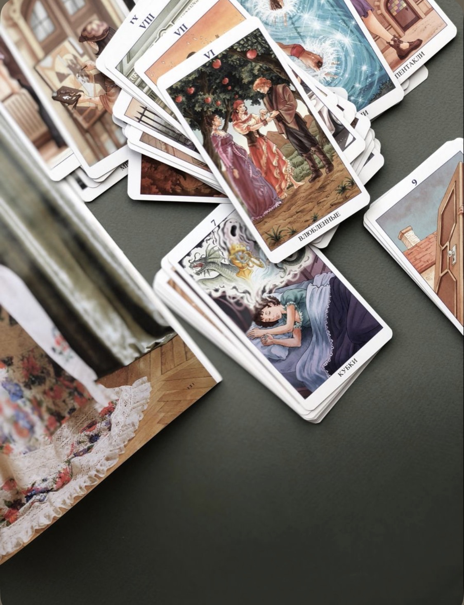
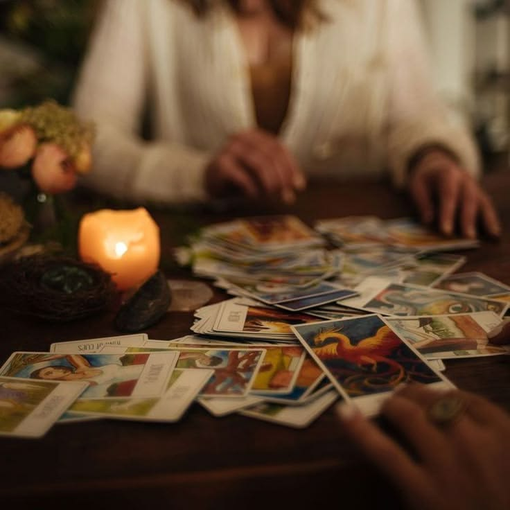
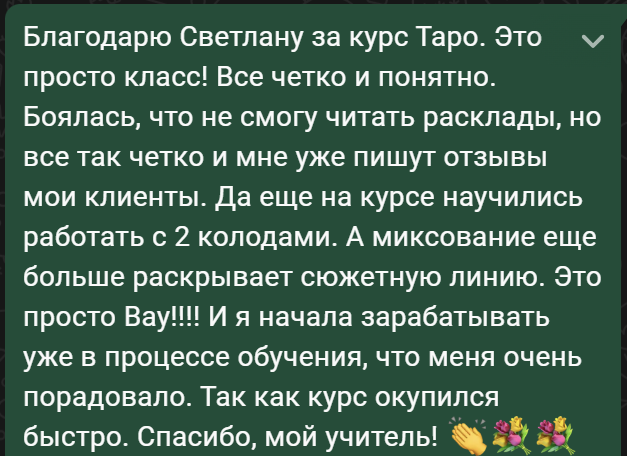
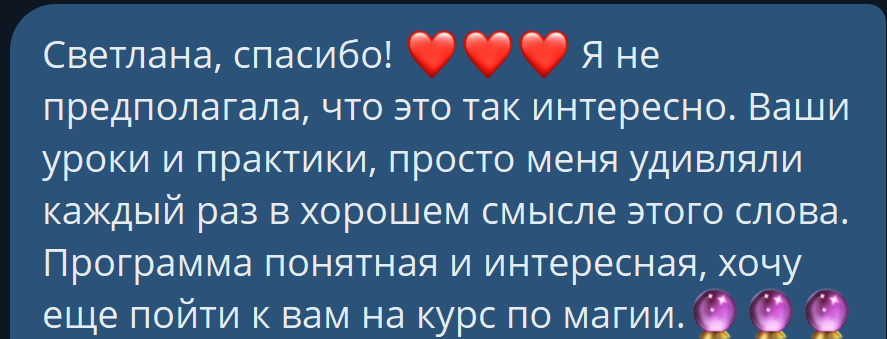
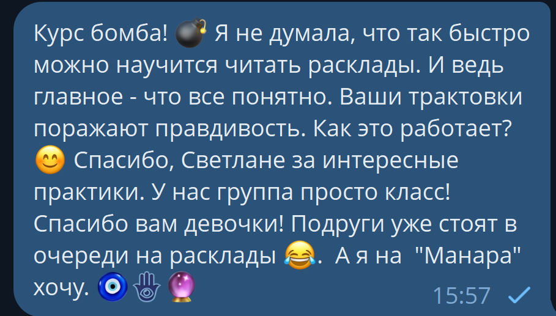

Система
Видеоуроки и PDF: устройство колоды, масти, Младшие, придворные и Старшие арканы, затем тематические расклады и вторая колода.
Авторский курс Светланы Гюйо
От первых вопросов к колоде — к самостоятельным раскладам и практике консультирования за четыре месяца обучения.
Старт 26 ноября 2026 · четверг · 15 мест в группе
Мои дорогие…
Знаете это чувство, когда вроде бы все как обычно: работа, дом, разговоры, привычные заботы, а внутри давно живет интерес к чему-то своему — к картам, символам, к возможности глубже разбираться в жизненных историях?
Вы смотрите на колоду и думаете: «Хочу научиться». Возможно, даже давно приобрели ее, прочитали книгу, сохранили десятки объяснений. Но стоит разложить карты, и уверенность куда-то исчезает.
Одну карту понимаете. Вторую тоже. А вместе они словно заговорили на языке, к которому вам забыли выдать переводчик.
И тут начинается: «А вдруг я неправильно вижу? А вдруг мне не дано? Может, нужно сначала еще немного поучиться самостоятельно?» Мои дорогие, так можно годами готовиться к собственной практике.
На этом курсе мы будем шаг за шагом изучать карты, читать расклады и разбираться в том, как рождается связная трактовка. В группе и личном обучении я буду рядом, чтобы проверять вашу работу, отвечать на вопросы и помогать замечать ошибки.
Для начала вам нужны колода, время на занятия и готовность практиковаться. Идеальных трактовок на входе никто не требует.
О методе
Знать значение карты и прочитать расклад — разные навыки. В книге вы находите общую трактовку. В раскладе нужно понять, как она отвечает на конкретный вопрос, что означает в своей позиции и как связана с соседними картами.
Вопрос → позиция → значение карты → сочетание → общий вывод
Вы учитесь объяснять свою трактовку: почему здесь видите препятствие, на какую карту опираетесь, как пришли к итоговому ответу.
Будем заменять это понятной последовательностью действий, практикой и разбором. В форматах с сопровождением можно принести тот расклад, на котором вы остановились, и разобраться в затруднении со мной.
Хочу научиться читать раскладыКак это работает
Видеоуроки и PDF: устройство колоды, масти, Младшие, придворные и Старшие арканы, затем тематические расклады и вторая колода.

Учимся учитывать вопрос, видеть сочетания и формулировать ответ. В группе и личном формате встречаемся онлайн каждую неделю.

В групповом и личном обучении вы получаете проверку домашних раскладов и проходите учебную консультацию. Разбираем вашу трактовку и то, что стоит доработать.
В самостоятельном формате — видеоуроки, PDF и подарки. Без заданий от преподавателя, проверки и онлайн-встреч.
Особенности авторского курса
Изучаете Райдера Уэйта и «78 дверей», затем переходите к миксованию — совместному чтению карт.
Разбираем, как значение меняется в зависимости от вопроса и позиции и как карты дополняют друг друга.
В группе и лично: видим, где потерялась связь, что осталось без внимания и как доработать вывод.
В группе и лично: практикуетесь объяснять расклад другому человеку и получаете обратную связь.
Личный алтарь, кармическое предназначение, чакральный расклад, диагностика негатива в рамках эзотерической традиции и медитация.
Для группы и личного обучения — дополнительный индивидуальный разбор без доплаты по условиям второй гарантии.
Программа на четыре месяца
Начнем с правил работы и подготовки своего пространства для практики.
Разберемся в устройстве классической колоды Райдера Уэйта и взаимосвязи ее частей.
Изучим значения карт и их прочтение в контексте вопросов.
Рассмотрим их особенности, характеры и роли в раскладах.
Разберем символику, значения и применение в трактовках.
Будем много практиковаться на протяжении курса: от отдельных карт к связному ответу.
Эзотерический подход к этим темам. Работа с картами не заменяет медицинскую диагностику и консультацию врача.
Соответствующие схемы и их эзотерическая интерпретация. Трактовка карт сама по себе не доказывает наличие внешнего воздействия.
Разбор этой темы через Таро в рамках эзотерической программы курса.
Изучим Старшие и Младшие арканы второй колоды и особенности ее чтения.
Будем учиться сочетать две колоды в работе с раскладами.
Отдельная медитативная практика внутри основной программы.
Это тематические блоки программы. Практика раскладов сопровождает обучение, а не откладывается до окончания теории.
Ваш путь в Таро
Перед выбором формата
Если узнаете себя, посмотрите, какой формат участия подходит вам сейчас.
Сколько стоит обучение
Стоимость за весь четырехмесячный курс. Видеоурок выходит раз в неделю.
Материалы для самостоятельного изучения
12 000 ₽ / 120 €
за весь курс
Без заданий от преподавателя, проверки работ, учебного чата и онлайн-встреч.
Выбрать самостоятельное обучениеПрактика, общение и обратная связь
22 000 ₽ / 220 €
за весь курс
15 мест в группе.
Войти в потокИндивидуальная работа со мной
66 000 ₽ / 660 €
за весь курс
Индивидуальный формат сопровождения.
Выбрать личное обучениеВо всех форматах видеоуроки и PDF доступны во время курса и еще один год после его окончания. Затем доступ к материалам можно продлевать за 1 500 ₽ в месяц.
В каждом варианте участия
«Хочется спросить обо всем, а потом непонятно, на что именно отвечают карты».
Материал поможет готовить более конкретные вопросы и определять тему расклада до того, как вы достали первую карту.
Включено в обучение«Открываю колоду и не понимаю, с чего начать».
Гайд со структурой колоды, знакомством с картами и первыми шагами в практике. К нему удобно возвращаться, чтобы восстановить основу.
Включено в обучение«Внимание осталось в заботах, разговорах и чужих историях».
Отдельная медитативная практика: возможность остановиться и уделить время себе в дополнение к обучению.
Включено в обучениеВсе в одном курсе
В групповом формате вы забираете:
Весь групповой курс
22 000 ₽ / 220 €
Войти в потокСамостоятельно — 12 000 ₽ / 120 € · Лично — 66 000 ₽ / 660 €
Две гарантии
Перед обучением хочется знать: подойдет ли моя подача, будет ли понятно, комфортно ли вам заниматься. Я вас понимаю.
В течение первых семи дней после старта курса посмотрите урок, попробуйте формат, почувствуйте, подходит ли вам обучение.
Если поймете, что это не ваше, напишите на school.luch.sveta@gmail.com в течение этих семи дней — я верну оплату полностью, без дополнительных условий и объяснения причин.
Для всех трех тарифов.
Если через два месяца вы прошли доступные уроки и выполнили задания, но все еще затрудняетесь самостоятельно прочитать учебный расклад на три карты, я проведу дополнительный индивидуальный разбор без доплаты.
Найдем затруднение и отработаем его на примере.
Для группового и личного обучения.
Живой опыт обучения
Отзывы целиком. Нажмите на изображение, чтобы увеличить.

Благодарю Светлану за курс Таро. Это просто класс! Все четко и понятно. Боялась, что не смогу читать расклады, но все так четко и мне уже пишут отзывы мои клиенты. Да еще на курсе научились работать с 2 колодами. А миксование еще больше раскрывает сюжетную линию. Это просто Вау!!!! И я начала зарабатывать уже в процессе обучения, что меня очень порадовало. Так как курс окупился быстро. Спасибо, мой учитель! 👏💐💐

Светлана, спасибо! ❤️❤️❤️ Я не предполагала, что это так интересно. Ваши уроки и практики, просто меня удивляли каждый раз в хорошем смысле этого слова. Программа понятная и интересная, хочу еще пойти к вам на курс по магии. 🔮🔮🔮

Курс бомба! 💣 Я не думала, что так быстро можно научиться читать расклады. И ведь главное, что все понятно. Ваши трактовки поражают правдивостью. Как это работает? 😊 Спасибо, Светлане за интересные практики. У нас группа просто класс! Спасибо вам девочки! Подруги уже стоят в очереди на расклады 😂. А я на "Манара" хочу. 🧿🪬🔮
Отзывы отражают личный опыт учениц. Результаты индивидуальны и зависят от практики и вовлеченности. Курс не гарантирует клиентов или определенный заработок.
Ответы на ваши вопросы
Да. Начинаем с техники безопасности, подготовки места для практики, структуры колоды и последовательного изучения карт.
Да, если вам нужно систематизировать знания и практиковаться в чтении расклада целиком. Для проверки собственных работ выбирайте групповой или личный формат.
Классическое Таро Райдера Уэйта и Таро «78 дверей». Затем переходим к миксованию.
Один новый видеоурок в неделю. В группе дополнительно проходит одна общая онлайн-практика в неделю, в личном формате — индивидуальная встреча на 60 минут.
Нет. В нем доступны видеоуроки, PDF и три подарка. Практику вы организуете самостоятельно. Учебного чата и онлайн-встреч нет.
Видеоуроки и PDF доступны во время четырехмесячного курса и еще один год после его окончания — во всех трех тарифах.
Да, после окончания включенного срока — за 1 500 ₽ в месяц. Это продление доступа к видеоурокам и PDF.
Вы сможете развивать практику в сторону платных консультаций. В группе и лично предусмотрена учебная консультация с обратной связью. Готовность к приему зависит от навыков, доход — также от спроса и работы с клиентами. Конкретный заработок курс не гарантирует.
Напишите на school.luch.sveta@gmail.com в течение первых семи дней после старта — я верну оплату полностью.
В группе и личном обучении, если вы прошли доступные уроки и выполнили задания, но затрудняетесь прочитать учебный расклад на три карты, я проведу дополнительный индивидуальный разбор без доплаты.
Несколько теплых слов про места
Мои дорогие, в группу я беру 15 учениц. В формате с проверкой важно уделять внимание вашим работам: разбирать трактовки, отвечать на вопросы и помогать там, где пока не складывается.
Поэтому количество мест в группе ограничено. Если хотите заниматься вместе, оставьте заявку заранее, чтобы успеть обсудить участие и подготовиться к началу курса.
Начинаем 26 ноября 2026 года, в четверг.
Войти в потокP.S.
Мои дорогие…
Вашей колоде не обязательно еще год ждать подходящего момента. Начать можно с первого урока, первого вопроса и своей первой попытки прочитать ответ. Я приглашаю вас пройти этот путь вместе.
Войти в поток